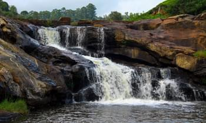
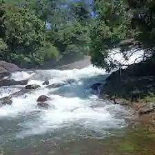
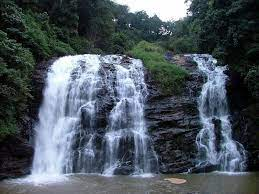
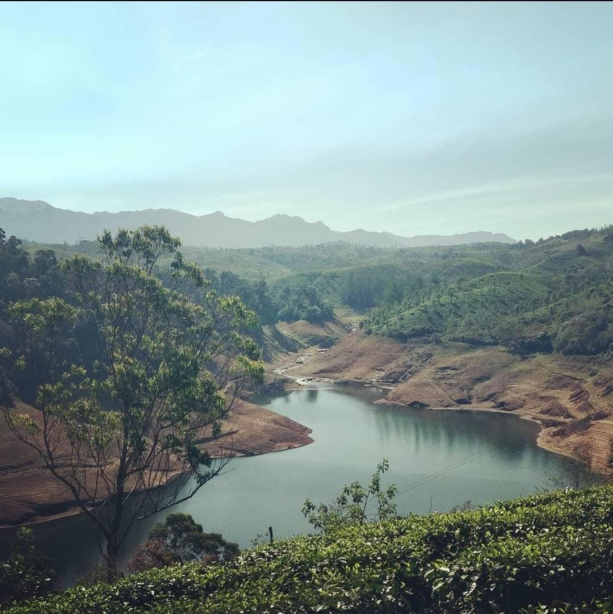
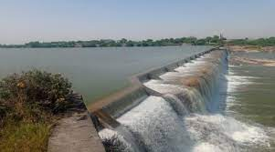

Cascade Chronicles
Falls
Birla Water Falls
Birla Waterfalls is a scenic waterfall located in the Valparai region of Tamil Nadu, India. The waterfall is situated in the midst of a dense forest and is surrounded by lush green vegetation, making it a popular destination for tourists looking to enjoy the natural beauty of the region.
Airport: 3 hr 34 min (124.1km)
Railway station: 3 hr 13 min (109.5km)
Kunjunni Water Falls
Kunjunni Waterfalls in Valparai, Tamil Nadu, beckons with serene charm amidst lush greenery and a dense forest. Perfect for nature enthusiasts seeking relaxation in a picturesque setting.
Airport: 3 hr 46 min (134km)
Railway station: 3 hr 27 min (120km)
Kovai Kutralam Water Falls
Kovai Kutralam is a scenic spot with a gentle waterfall originating on the Siruvani hill ranges. It is located on the western ghat mountain range that lies to the west of the city.The siruvani dam is just above this water fall.
Airport: 1 hr 37 min (46km)
Railway station: 1 hr 12 min (34km)
Aliyar Dam

The dam is located in the foothills of Valparai, in the Anaimalai Hills of the Western Ghats. It is about 65 kilometres (40 mi) from Coimbatore.
Airport: 2 hr 6 min (79km)
Railway station: 1 hr 48 min (65km)
Upper Solaiyar Dam
The Solaiyar dam is a vital reservoir under the Parambikulam Aliyar Project and has a water storage capacity of 160 ft (49 m). The reservoir's overflowing waters are let into the Parambikulam Reservoir through the saddle dam.
Airport: 4 hr 58 min (158.9km)
Railway station: 4 hr 38 min (144.4km)
Check Dam
A check dam placed in the ditch, swale, or channel interrupts the flow of water and flattens the gradient of the channel, thereby reducing the velocity. In turn, this obstruction induces infiltration and reduces eroding.
Airport: 1 hr 14 min (38km)
Railway station: 1 hr 37 min (48km)